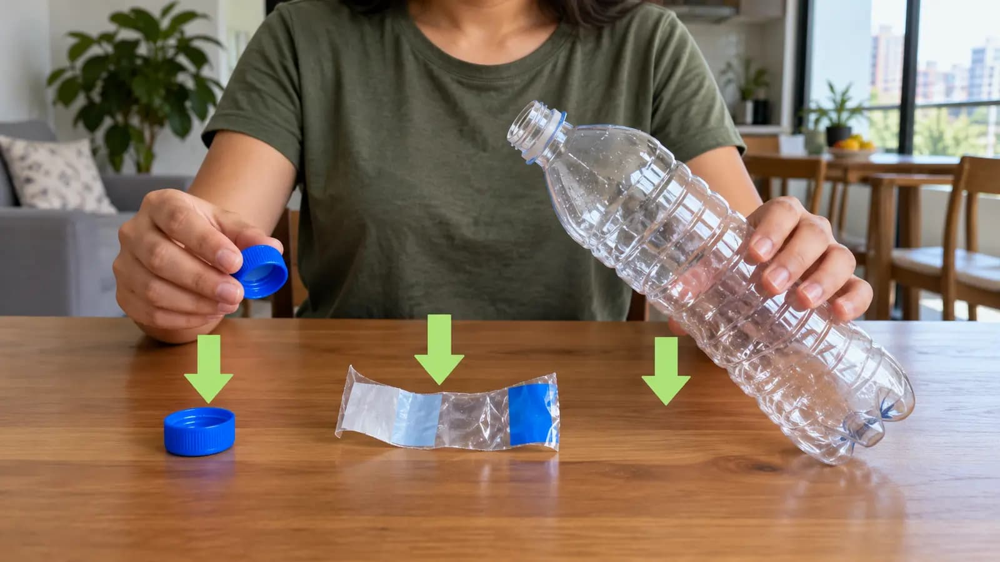
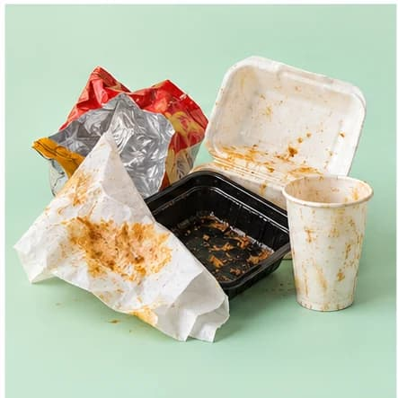
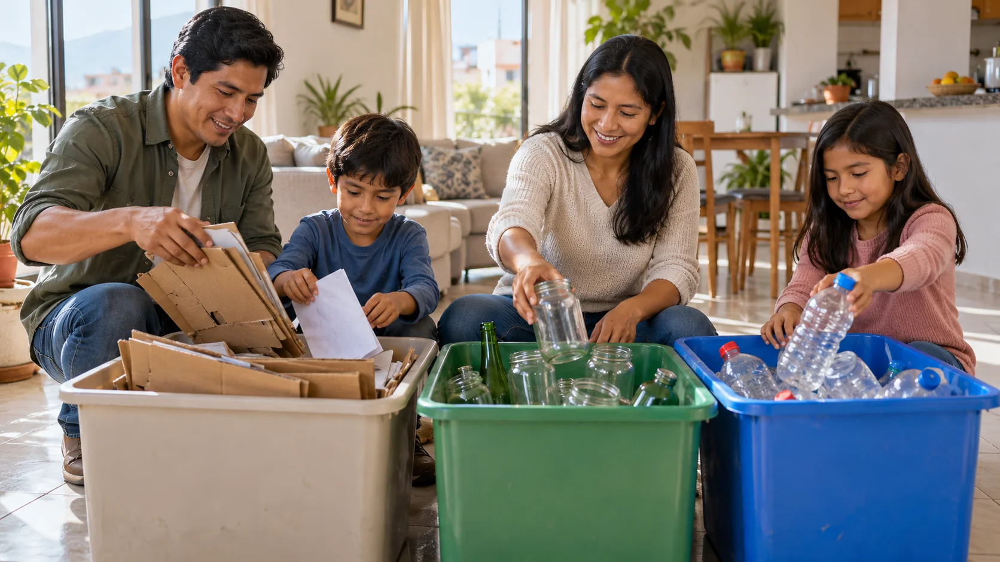

1. Vacío, enjuagado y seco
Sin restos de líquido ni azúcar; enjuague rápido y secado al aire.
Criterios de recepción
Compara rápido antes de entregar tu envase.
Sin restos de líquido ni azúcar; enjuague rápido y secado al aire.

Desenrosca la tapa antes de entregar; se recicla aparte.

Contamina el cartón y daña todo el lote reciclable.

Envases con solventes o tóxicos van al tacho rojo, no al verde.
Diferencia qué va al reciclaje y qué no.
Plástico transparente con símbolo #1.
Destino: Tacho verde o punto de acopio.
La grasa contamina el lote si no se desengrasa.
Destino: Lavar con detergente o punto de aceite.
Plástico descartable #6 sin reciclaje local.
Destino: Tacho negro.
Sigue la guía de 4 pasos antes de salir.